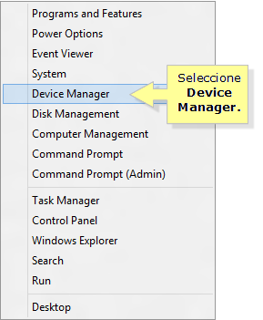
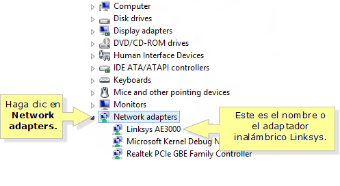

Comprobar adaptador de red
Si un adaptador de red esta instalado y configurado correctamente en un computador, este tendrá acceso a Internet. En los equipos que Windows como sistema operativo, abra el Administrador de Dispositivos.
Administrador de dispositivos se puede acceder desde la pestaña Hardware en la sección Propiedades del Sistema del Panel de Control de Windows.
- Pulse la tecla de Windows en el teclado + X, a continuación, seleccione Device Manager (Administrador de dispositivos). 
- En la ventana del Administrador de dispositivos, haga clic en la flecha desplegable junto a Adaptadores de red a continuación, busque el nombre de su adaptador inalámbrico de Linksys. 
- Este icono significa que el adaptador está activado y funciona correctamente.
- Esto significa que el adaptador está deshabilitado. Para solucionar esto, haga clic en el nombre de su adaptador inalámbrico Linksys A continuación, seleccione Habilitar. Una vez que se habilita el adaptador, haga clic en el adaptador de red del equipo a continuación, seleccione propiedades. Este dispositivo está funcionando correctamente.
- Esto significa que hay un problema con la instalación de los controladores de su adaptador. Para resolver esto, puede hacer lo siguiente:
- Retire el adaptador inalámbrico Linksys durante unos segundos y vuelva a insertar el dispositivo. Vuelva a comprobar el estado del adaptador en el Administrador de dispositivos después
- Si el adaptador está conectado a una base de soporte, extráigalo y conéctelo directamente al puerto USB del equipo.
- Actualizar o reinstalar los controladores de su adaptador.